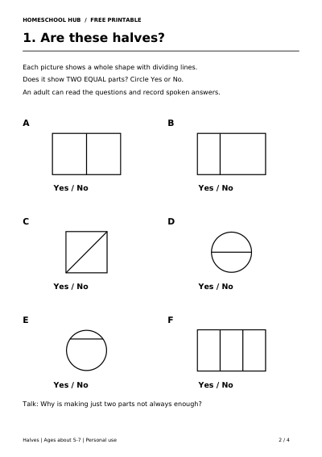

Free printable
Halves: Two Equal Parts
Ages about 5–7
Explore a half as one of two equal parts. Find shapes split into halves, then share even groups of counters equally between two boxes.
Four A4 pages: parent models, a shape-halves activity, equal-sharing practice and answers. The activities use drawn counters; no real objects, ruler or scissors are needed.
Try one activity for 5–10 minutes. Your child should be able to count to 10. Read the instructions aloud and accept spoken answers. An adult can draw the counters or record answers if helpful.
You need a pencil. Print pages 2–3 on A4 in black and white. For a shape, halves are equal in size. For a group of items, each half has the same number, with nothing left out.
For support, try Shapes or Numbers 1–10.
